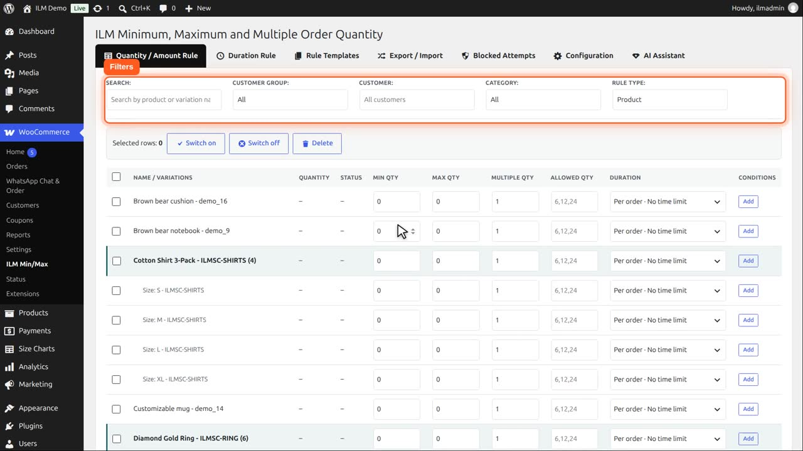
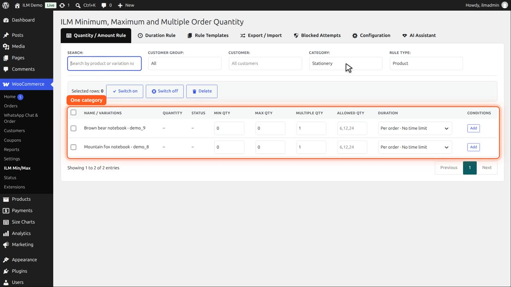
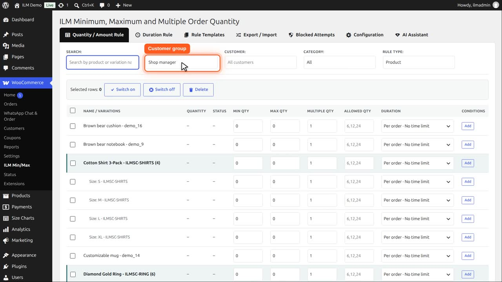
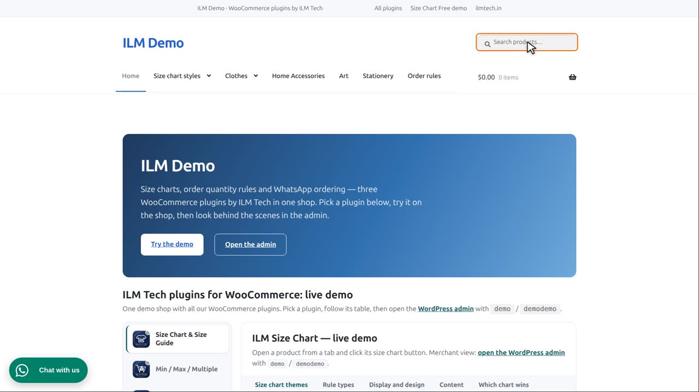
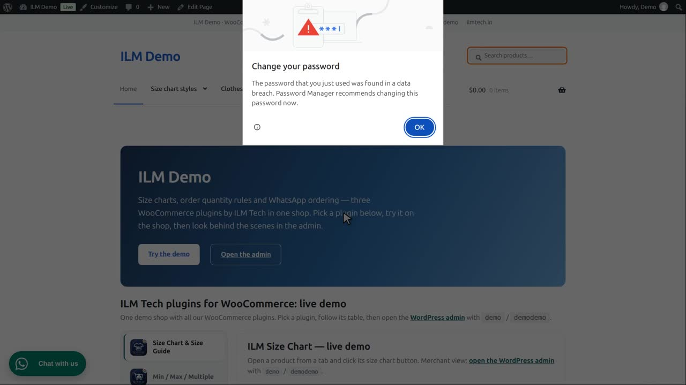
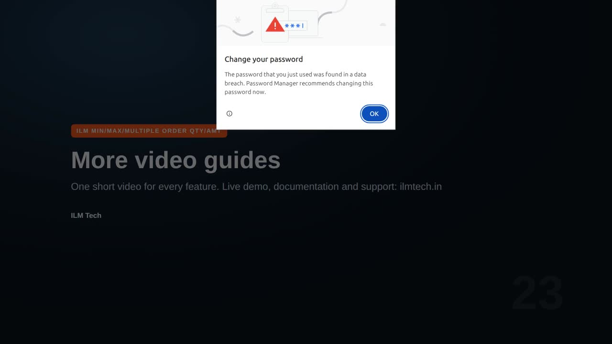

| Field | What it does |
|---|---|
| Search | Narrows the table to products or variations by name or SKU. |
| Customer Group | Narrows the table to rules that belong to one user role, and gives new rules to that role. |
| Customer | Shows and sets the rules for one customer only (see A rule for one customer). Leave it empty for rules that apply to everyone. |
| Category | Narrows the table to Product rules whose product belongs to this category (Rule Type = Product only). |
| Rule Type | Switches the whole table between Product, Category, Brand, Tag and User Role rules. The shop-wide Global rule is set on the Configuration tab. |
Above the rule table are the filters. Search narrows the table to products or variations by name or SKU.

For example, mug.
Category shows only the products of one category, which helps in a large catalogue. Rule Type switches to category, brand, tag, role or global rules.

Customer Group is the interesting one: it lets you give a product a rule for one user role only. We pick Shop manager, our wholesale buyers.

Search for the Customizable mug, and type ten in Min Qty. This rule is for that role only.

A guest can still order one.

A wholesale buyer must order at least ten.
